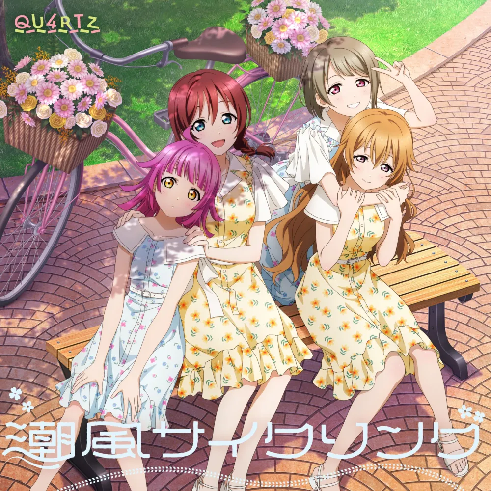

분류:
러브 라이브! School idol project series/등장인물 | 니지가사키 학원 스쿨 아이돌 동호회 | 러브 라이브! School idol project series/서브 유닛
#000,#000 QU4RTZ
| |
 | |
#000,#000 3rd Single 《#000,#000 PASTEL》
|
| ||||
데뷔일
| 2020년 2월 12일 (데뷔일로부터 [dday(2020-02-12)]일, [age(2020-02-12)]주년) | |||
데뷔 음반
| 2020년 2월 12일 > 틀 포함: 틀:음반 표시 | |||
최신 음반
| 2022년 11월 23일 > 틀 포함: 틀:음반 표시 | |||
장르
| J-POP, 팝 | |||
레이블
| 란티스 | |||
링크
|   | |||

1. 개요
니지가사키 학원 스쿨 아이돌 동호회의 4인 서브 유닛.유닛명은 '쿼츠'라고 읽는다.[1]이름의 유래는 석영, 수정이라는 뜻의 quartz라는 영단어에서 여기서 A를 숫자 4로 변환한 것이다. 원석처럼 매혹적인 총 멤버 수를 나타냈다.[2] 팬들에게서 유닛명 모집을 받아 2019년 5월 30일 유닛명 최종 후보 발표 및 투표가 시작되었으며 동년 6월 28일 확정 발표되었다.
2. 멤버
QU4RTZ의 멤버
| |||
 |  |  |  |
| #000,#fff 나카스 카스미 | #fff,#fff 코노에 카나타 | #fff,#fff 엠마 베르데 | #fff,#fff 텐노지 리나 |
3. 특징
화음 부분이 많아서 고생했지만, 그만큼 예쁘게 어우러진 것 같아 굉장히 기뻤어요. 2nd 라이브는 온라인이었기 때문에, 더욱 선명하게 QU4RTZ의 노랫소리를 들으실 수 있지 않았을까 생각합니다. QU4RTZ의 매력은 편안한 하모니로 "당신"을 치유하는 것이라 생각해서, 앞으로도 많은 분들을 치유할 수 있으면 좋겠다고 생각해요.
- 타나카 치에미>
역시 화음을 중요시한 유닛이라, 라이브에서 생으로 화음을 내는 것이 무척 즐거웠어요! 예쁘게 화음이 나면 무척 기분이 좋고, 개성 강한 노랫소리가 모여 연주하는 화음이, 한층 더 깊은 맛이 있어 QU4RTZ만의 매력이 되었다고 생각합니다. 「Sing & Smile!!」 에서는 그네에 타는 등, 가장 사람이 많은 유닛이라 보기에도 화려했던 것 같아요.
- 키토 아카리>
화음이 굉장히 어려웠던 걸 기억하고 있어요. 네 명이서 모이는 것도 꽤나 어려워서, 그런 의미에서 본방까지 굉장히 불안했습니다. 하지만 본방에서는 즐겁게 그네에 타거나, 어른스러운 곡도 노래하는 등, 유닛이기에 가능한 카스밍을 보여드릴 수 있어 좋았어요!
- 사가라 마유>
QU4RTZ 는 화음을 의식하기 때문에, 니지가사키 전원이 노래할 때보다도 다른 멤버의 노랫소리에 귀를 기울이고 있었어요. 그만큼, 세 명이 있어준다는 안심감과 단결을 강하게 느낄 수 있어 굉장히 즐거웠습니다. 네 명이서 하나의 화음을 만들기 위해 협조해서 노랫소리에 일체감이 느껴지는 것이, QU4RTZ 의 매력이라고 다시금 느꼈네요.
- 사시데 마리아>
리스아니! QU4RTZ 「Swinging!」 발매 인터뷰 中 QU4RTZ의 매력에 관한 질문에 대한 답변 번역 전문
- 개개인의 목소리가 매우 튀는 다른 유닛과는 달리 하모니를 위주로 하는 러브라이브 시리즈에서 화성이 두드러지는 유일한 유닛이다. 때문에 곡 중에서 각 멤버의 솔로파트가 아니면 개인의 목소리가 거의 튀지 않고 4명이 함께 이루는 화음이 굉장히 듣기 좋다. 가창력이 상향평준화된 니지동 중에서도 실력파 보컬이 대거 포진되어 있어 세 유닛 중 가창력 면에서 니지동 내 최고로 꼽힌다. 특히 라이브에서는 다른 유닛에 비해 안무나 동선 이동이 적고 단순한 점 덕분에 뛰어난 가창력이 더욱 부각된다.
- 타나카 치에미와 키토 아카리, 사시데 마리아 3명은 나마니지 중에서도 탑을 경쟁하는 실력파 보컬들이다. 체미는 라이브 안정성이 니지동 내 탑이며, 아카링은 솔로 아티스트 활동도 겸하고 있는 실력파 보컬, 츙룽 역시 특기인 성악을 살려서 고음부에서 굉장한 실력자다. 사가라 마유는 유닛 내 최약체이기는 하지만 애초에 가창력이 나쁜 것도 아닌 데다가 니코의 경우처럼 곡의 개성만큼은 워낙 잘 살려서 라이브 평가는 준수한 편이다.
- DiverDiva는 안무가 격하고 파워풀해 아무래도 라이브에서 음원만큼의 실력을 보여주기는 힘든 편이고 A·ZU·NA는 DiverDiva만큼은 아니지만 춤동작이 빠르고 동선 변화도 잦은 데다 멤버 모두 고음보다는 저음에 강점을 보이는 보컬이라 전체적인 곡의 음역대가 높은 A·ZU·NA 곡에서 힘들어하는 편이다. 반면 QU4RTZ의 곡은 그네를 타거나 가만히 서서 손동작을 하는 것처럼 안무가 단순한 경우가 많다.
- 가창력 뿐만 아니라 멤버 간 조합도 3학년 2명에 1학년 2명으로 이루어져 있고 창설자이자 포근한 마음으로 멤버들을 챙겨주는 천사표 엠마, 은근히 챙겨주는 카나타, 귀여움 그 자체인 리나, 그 사이에서 음모를 꾸미지만 번번이 실패하는 카스미의 조합이 귀엽거나 달달한 분위기를 좋아하는 팬들에게 지지를 얻고 있다.
4. 활동
4.1. 음반 목록
틀 포함: 틀:QU4RTZ의 곡 일람
4.2. 그 외
캐스트 인터뷰, 당신과 오다이바! 니지동 데이트♡♡♡ 수록- 스페셜 드라마
| [youtube(ZcPj-4Y5ilY)] |
- 캐스트 인터뷰 #
5. 기타
.jpg)
스쿠스타에서 중앙 3자리에 QU4RTZ 멤버 중 3명을 배치하고 남은 QU4RTZ 멤버를 나머지 6자리 중 아무 곳에나 배치하면 위와 같은 컷인을 확인할 수 있다.

유닛 1집 특전으로 스쿠스타에서 퓨어 속성의 악세사리를 얻을 수 있다.
- 3학년 2명, 1학년 2명으로 자매같은 구성이 특징이다. 노래 스타일은 잔잔한 분위기를 메인으로 하는 Printemps, lily white와 유사하고 유닛이 추구하는 속성이 '퓨어' 인 것은 전작의 lily white, AZALEA와 똑같으며 유닛 구성원들은 2학년이 없는 BiBi, AZALEA와 유사하다.
- 스쿠스타 20장이 나온 후 재평가된 유닛인데 이 유닛 구성원들만이 유일하게 한 명도 스쿨 아이돌 부로 옮겨가지 않았다.[8] 하지만 20~21장에서 카스미가 과도한 분량을 받았고 26장과 28장에서의 엠마의 발언과 캐릭터 붕괴 문제로 인한 반작용으로 이 평가가 일부 퇴색되기도 하였다.
- 반대로 애니메이션 2기에서는 엠마가 란쥬를 설득하기 위해 처음으로 움직이는 유닛으로 바뀌었다. 특히 엠마는 스쿠스타에서는 자신의 스쿨 아이돌 관에 상반되는 스쿨 아이돌 부에 반발하는 자세를 취했으나 애니메이션 2기에서는 란쥬의 설정이 변경되어 이러한 란쥬를 설득하려는 자세를 취하게 된다.
- 애니메이션에서는 2기 3화에서 엠마의 아이디어로 창설되었다.[9]
각주
- [1] 일본어 발음은 "쿠오츠"에 가깝다. ↑
- [2] 스위스의 4대 국어 중 하나인 로망슈어의 quatre를 의식한 네이밍으로도 보인다. ↑
- [3] 스쿠스타와 애니메이션 둘 다 엠마가 쿼츠를 만들었다. ↑
- [4] 단적으로 이전유닛 생방송에서 시청자 사연을 읽고 잠시 화음 맞추기 테스트를 하는 장면이 있었는데 잘 보면 사시데 마리아가 제일 먼저 기준음을 잡아주고 다른 멤버들의 음정 높이까지 가이드해 주는 모습을 볼 수 있다. ↑
- [5] 9인곡(μ’s, Aqours, 초기 니지동의 곡)은 물론, 1인곡(각 멤버의 솔로곡), 2인곡(특전곡 및 듀오 트리오 앨범 중 듀오곡들과 DiverDiva의 곡) 3인곡(3인 유닛곡, 학년곡 등), 5인곡(Liella!의 곡), 6인곡(μ’s의 Love wing bell, Aqours의 夢で夜空を照らしたい), 7인곡(μ’s의 これからのSomeday), 8인곡(Aqours의 想いよひとつになれ), 10인곡(니지동의 Just Believe!!!)이 있었으며, 서브 유닛까지 포함할 경우 Saint Aqours Snow의 Awaken the power, Over The Next Rainbow가 11인곡이다. 이후 12인곡(니지동의 L！ L！ L！ (Love the Life We Live))이 등장했으며 아예 26명이 부른 LIVE with a smile!까지 나왔다. ↑
- [6] QU4RTZ의 곡 이외의 4인곡은 러브 라이브! 슈퍼스타!!의 常夏☆サンシャイン이 유일하다. ↑
- [7] 엠마와 카나타는 같은 스쿠페스 분실의 멤버였고 카스미와 리나와는 같은 1학년이기에 시즈쿠와 접점이 많다. 번역 ↑
- [8] DiverDiva의 구성원들은 전부 부로 옮겨갔고 당시 소속 유닛이 없던 미후네 시오리코도 부로 옮겨간 상황. A·ZU·NA는 오사카 시즈쿠가 잠시 부로 옮겼다가 복귀했다. ↑
- [9] 스쿠스타에서도 엠마가 창설했다. ↑